Einträge in 2024
Signal-Rausch-Verhältnis bei einer Tiefpass-Filterung
- Nov 01, 2024
Die Güte eines Signals wird in der Systemtheorie über das Signal-Rausch-Verhältnis (Signal-Noise-Ratio SNR) beschrieben. Es ist definiert als das Verhältnis der mittleren Nutzsignalleistung zur mittleren Rauschsignalleistung:
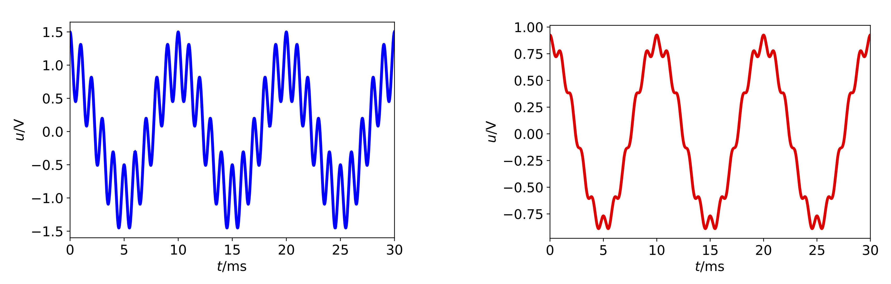Kontinuierliche und Diskrete Signale
- Nov 01, 2024
Geben Sie an, von welcher Art das nachfolgend abgebildete Signal hinsichtlich seines Verhaltens in Zeit- sowie in Amplitudenrichtung ist!
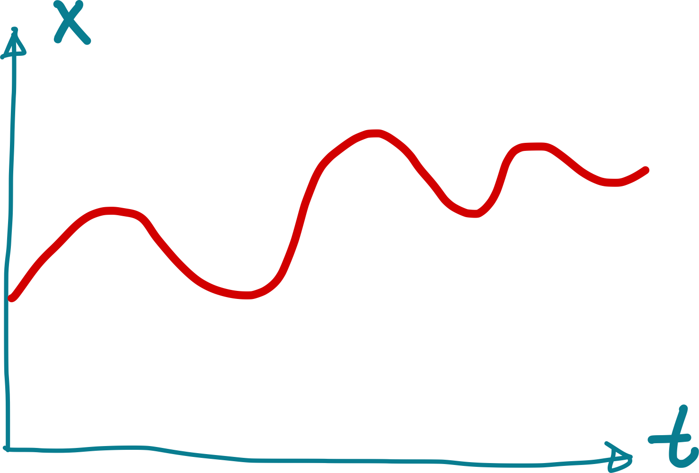Funkwellenübertragung
- Nov 01, 2024
Beschreiben Sie kurz in eigenen Worten, wie die Übertragung von Funkwellen funktioniert. Welche Art von Strahlung wird verwendet? Welche Frequenzen werden für Bodenkommunikation und welche Frequenzen für Satellitenkommunikation verwendet und warum? Wodurch kann die Übertragung gestört werden? Welche Möglichkeiten gibt es, auf dieses Trägersignal eine Nachricht aufzumodulieren?
Fourierreihe eines Rechteckpulses
- Nov 01, 2024
Bestimmen Sie die komplexe und die reelle Fourier-Reihe für die gegebene Sägezahn-Spannung. Wie lauten die Koeffizienten für \(k = 1,2,3,4,5\)? Skizzieren Sie das Betragsspektrum.
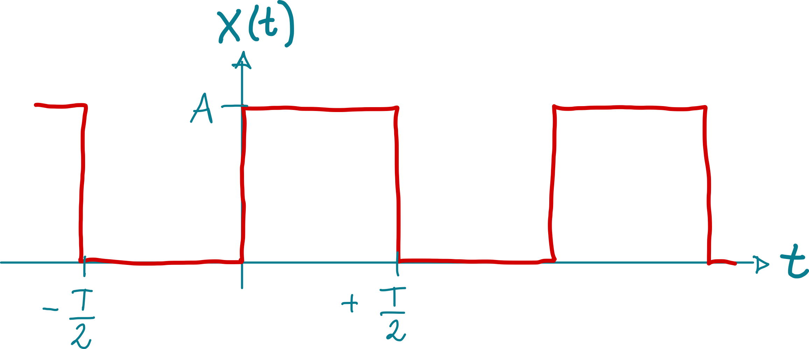Fourierreihe einer Sägezahn-Spannung
- Nov 01, 2024
Bestimmen Sie die komplexe und die reelle Fourier-Reihe für die gegebene Sägezahn-Spannung. Wie lauten die Koeffizienten für \(k = 1,2,3,4,5\)? Skizzieren Sie das Betragsspektrum.
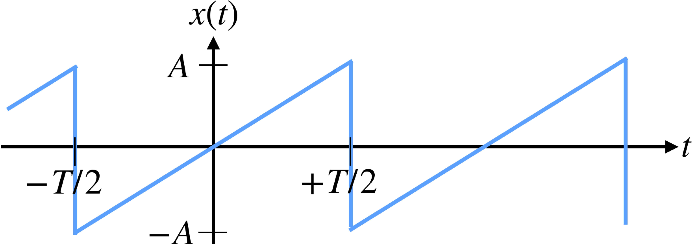Fourierreihe einer Dreieck-Schwingung
- Nov 01, 2024
Bestimmen Sie die komplexe und die reelle Fourier-Reihe für die gegebene Dreieck-Schwingung. Wie lauten die Koeffizienten für \(k = 1,2,3,4,5\)? Skizzieren Sie das Betragsspektrum.
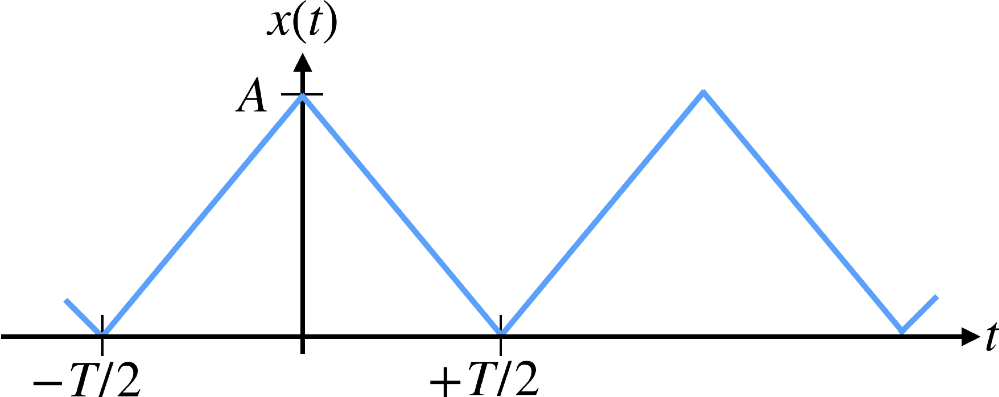Fourier-Transformation Sägezahn
- Nov 01, 2024
Gegeben sind die folgenden zwei Zeitfunktionen \(x_1(t)\) und \(x_2(t)\) in der Abbildung.
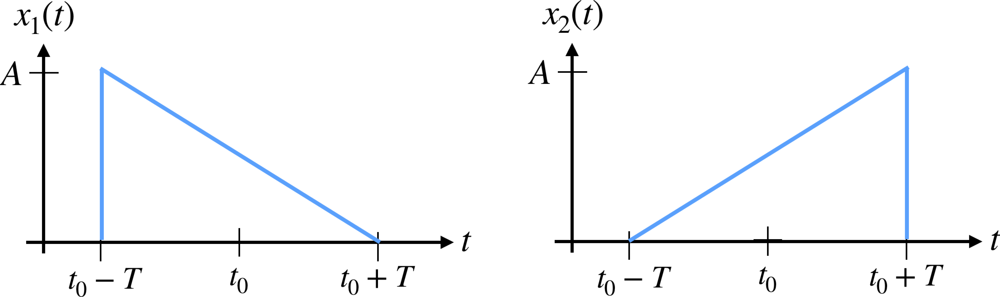Fourier-Reihe: Warum klingt Dreieckswelle leise und kläglich?
- Nov 01, 2024
Am 29.09.2011 hat Globoflexia online folgendes Problem gepostet:
Temperatursensor PT-100
- Okt 24, 2024
In der Abbildung finden Sie die Kennlinie des Temperatursensors Pt-100. Geben Sie ausgehend von der Abbildung an, welchen Wert die Empfindlichkeit des Temperatursensors im dargestellten Bereich etwa annimmt!
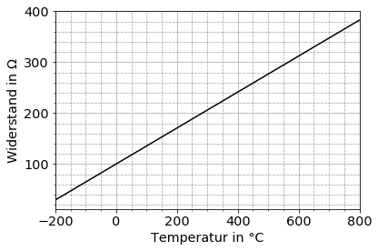Quantisierungsabweichung infolge der Digitalisierung
- Okt 24, 2024
Die relative Abweichung infolge der Quantisierung soll kleiner als 0,02% bleiben. Wie groß muss die Auflösung des zu verwendenden AD-Wandlers mindestens sein?
Empfindlichkeit eines Messgerätes
- Okt 24, 2024
Geben Sie an, welche der folgenden Aussagen hinsichtlich der Empfindlichkeit eines Messgerätes zutreffend sind!
Digitalisierung
- Okt 24, 2024
Ein analoges Spannungssignal im Bereich von \(-12\,\mathrm V\) bis \(+12\,\mathrm V\) soll so digitalisiert werden, dass der maximale Quantisierungsfehler \(2\,\mathrm{mV}\) beträgt. Geben Sie an, mit wie viel Bit der A/D-Umsetzer mindestens arbeiten muss!
Dampfdruckthermometer
- Okt 24, 2024
Mit dem Dampfdruckthermometer kann die Temperatur aus dem Dampfdruck einer Flüssigkeit bestimmt werden. Die Flüssigkeit wird mit der Messstelle in einen thermischen Kontakt gebracht. Der Dampfdruck nimmt mit der Temperatur der Flüssigkeit beschleunigt zu und kann durch folgende Exponentialfunktion beschrieben werden:
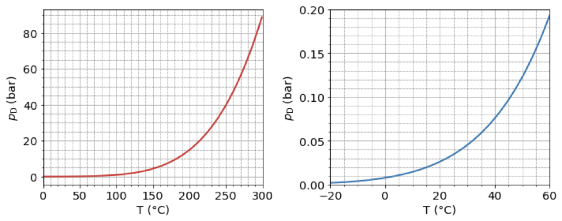Aliasing bei der Digitalisierung von Musik
- Okt 24, 2024
Sie planen, ein Musiksignal zu digitalisieren und hierfür einen A/D-Umsetzer mit einer Abtastfrequenz von \(44,1\,\mathrm{kHz}\) zu verwenden. Sie wissen, dass in dem analogen Musiksignal Frequenzanteile bis hinauf zu \(50\,\mathrm{kHz}\) enthalten sind, deren Amplitude nicht vernachlässigbar ist. Ihnen ist bewusst, dass für diese hohen Frequenzanteile das Abtasttheorem nach Shannon verletzt wird. Ihr Kommilitone schlägt vor, die A/D- Umsetzung dennoch wie geplant vorzunehmen und argumentiert, dass Frequenzen von über \(20\,\mathrm{kHz}\) für den Menschen ohnehin nicht hörbar seien und es daher keine Rolle spiele, wenn diese nicht korrekt digitalisiert werden.
Hall-Konstante: Lineare Regression
- Okt 21, 2024
Um die Hall-Konstante \(A_\mathrm H\) eines neuen Werkstoffs zu bestimmen haben Sie eine Messreihe durchgeführt, bei welcher in bestimmten Arbeitspunkten jeweils Strom und Spannung an einem Hall-Element gemessen wurden. Unter Berücksichtigung der relevanten Konstanten – magnetische Flussdichte und Dicke des Hall-Elements – erhalten Sie die in nachfolgender Tabelle zusammengefassten \(x-y\)-Wertepaare:
Dampfdruckthermometer Least-Square-Verfahren
- Okt 21, 2024
Mit dem Dampfdruckthermometer kann die Temperatur aus dem Dampfdruck einer Flüssigkeit bestimmt werden. Die Flüssigkeit wird mit der Messstelle in einen thermischen Kontakt gebracht. Der Dampfdruck nimmt mit der Temperatur der Flüssigkeit beschleunigt zu und kann durch folgende Exponentialfunktion beschrieben werden:
Stichprobe Qualitätssicherung
- Okt 11, 2024
In einer Produktion sollen Spiralfedern mit einer Federkonstsanten \(k_F = (2{,}2 \pm 0{2})\,\mathrm{N/mm}\) (Garantiefehlergrenze) hergestellt werden. Die Qualitätssicherung erfolgt durch eine Stichprobenprüfung an 10 zufällig ausgewählten Federn. Die Federkonstante \(k\) wird aus der Kraft \(F\) und der relativen Wegänderung \(\Delta l\) wie folgt berechnet
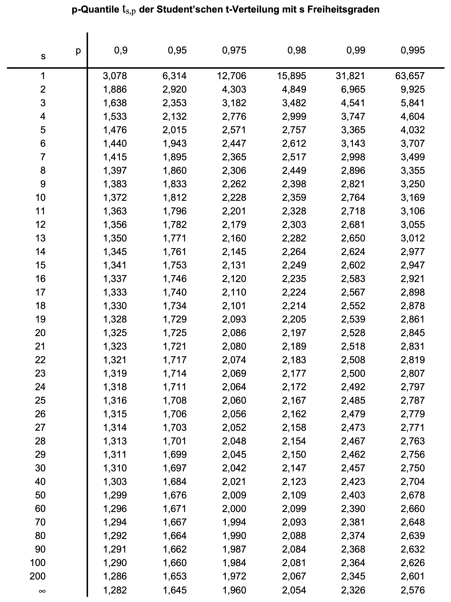Dichtemessung einer Flüssigkeit
- Okt 11, 2024
Die Dichte eines flüssigen Mediums kann unter Ausnutzung des Archimedischen Prinzips ermittelt werden. Hiernach taucht ein Körper so weit in eine Flüssigkeit ein, bis die Gewichtskraft der verdrängten Flüssigkeit der Gewichtskraft des eingetauchten Körpers entspricht. Je kleiner also die Dichte der zu untersuchenden Flüssigkeit ist, desto tiefer wird ein schwimmender Prüfkörper in diese eintauchen.
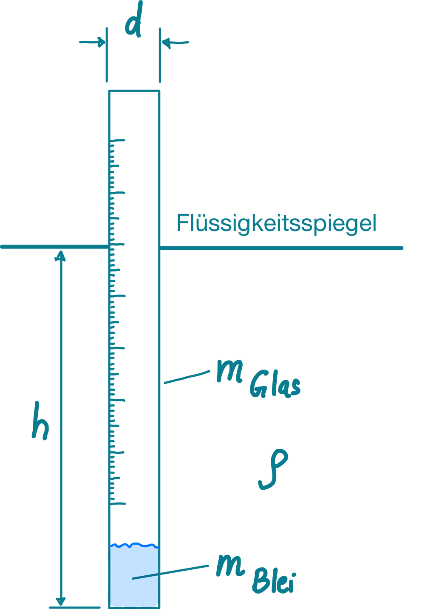Datenblatt Prozessormessgerät: Messunsicherheit
- Okt 11, 2024
Ihnen steht folgendes Prozessormessgerät \footnote{Prozessormessgeräte sind Messinstrumente mit integriertem Mikroprozessor, welche neben der Messung physikalischer Größen auch Datenverarbeitung, -speicherung und Kommunikation ermöglichen. Es wird überall dort eingesetzt, wo Messwerte sowie Echtzeit-Datenanalyse oder Fernüberwachung erforderlich sind.} für Spannungs-, Strom- und Temperaturmessung zur Verfügung. Das Datenblatt dazu finden Sie online oder folgender Abbildung. Geben Sie das vollständige Messergebnis inkl. Messunsicherheit für folgende Messungen an, wobei sie eine Rechteckverteilung bei der Angabe im Datenblatt annehmen:
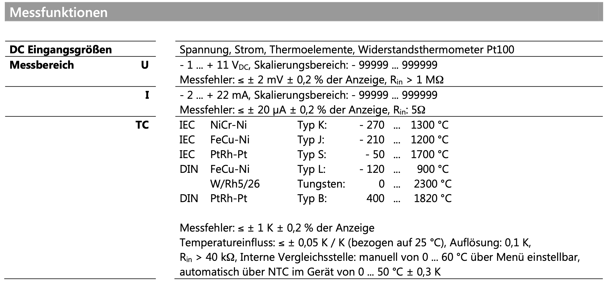NASA Mars Climate Orbiter Einheiten-Fehler
- Okt 07, 2024
Bei der Mars Climate Orbiter-Mission von 1999 kam es zu einem Fehler bei der Umrechnung von Einheiten. Die NASA verwendete metrische Einheiten, während der Auftragnehmer imperiale Einheiten nutzte. Ein Schubvektor wurde in Pound-force Sekunden (\(\text{lbf·s}\)) angegeben, während die NASA die Angabe in Newton-Sekunden (\(\text{N·s}\)) erwartete.
Genauigkeitsklassen von Messgeräten
- Okt 07, 2024
Sie haben ein Feinmessgerät der Klasse K 0,2 und ein Präzisionsmessgerät der Klasse K 0,002 zur Verfügung und möchten eine Spannung von \(10\,\mathrm V\) mit einer maximal möglichen Abweichung von \(1\,\mathrm{mV}\) messen. Welches Gerät sollten Sie verwenden? Begründen Sie ihre Antwort.
Datenblatt Prozessormessgerät
- Okt 07, 2024
Ihnen steht folgendes Prozessormessgerät \footnote{Prozessormessgeräte sind Messinstrumente mit integriertem Mikroprozessor, welche neben der Messung physikalischer Größen auch Datenverarbeitung, -speicherung und Kommunikation ermöglichen. Es wird überall dort eingesetzt, wo Messwerte sowie Echtzeit-Datenanalyse oder Fernüberwachung erforderlich sind.} für Spannungs-, Strom- und Temperaturmessung zur Verfügung. Das Datenblatt dazu finden Sie online oder folgender Abbildung. Geben Sie das vollständige Messergebnis inkl. maximal möglicher Messabweichung (worst case) für folgende Messungen an:
Abweichung aufgrund von Verbindungskabeln
- Okt 07, 2024
Verbindungskabel besitzen einen Innenwiderstand, wodurch Spannungsabfälle nach
Abtastung eines Dreiecksignals in der Audiotechnik
- Okt 01, 2024
Ein Musikproduktionsstudio verwendet Synthesizer, die Dreiecksignale erzeugen. Diese Signale müssen korrekt digitalisiert werden, um die Klangqualität zu bewahren.